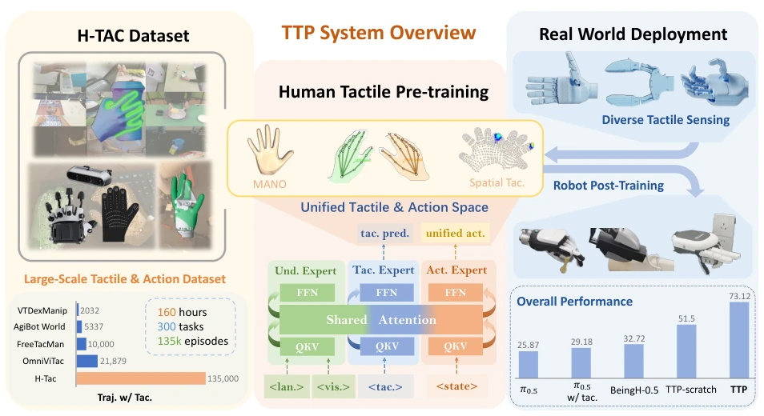
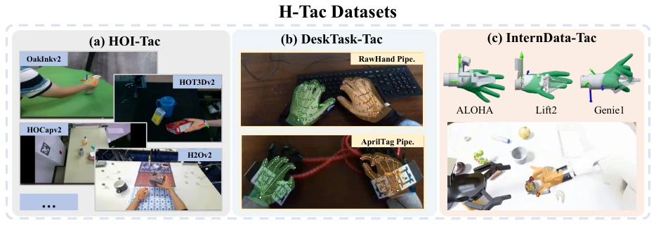
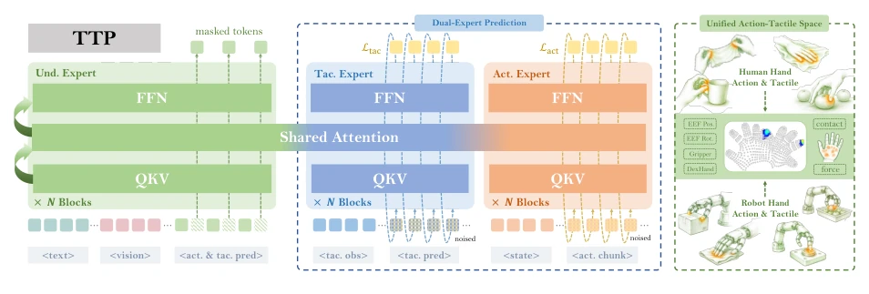
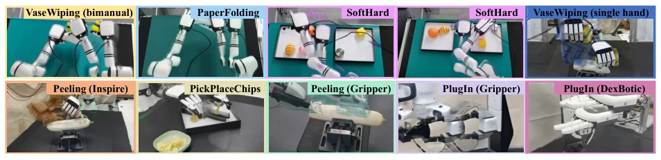
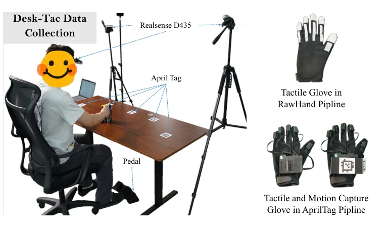
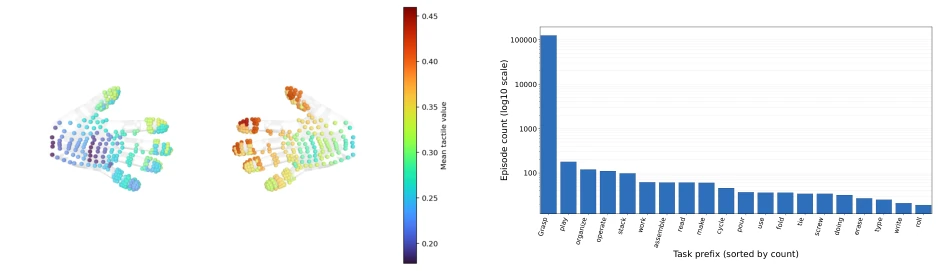
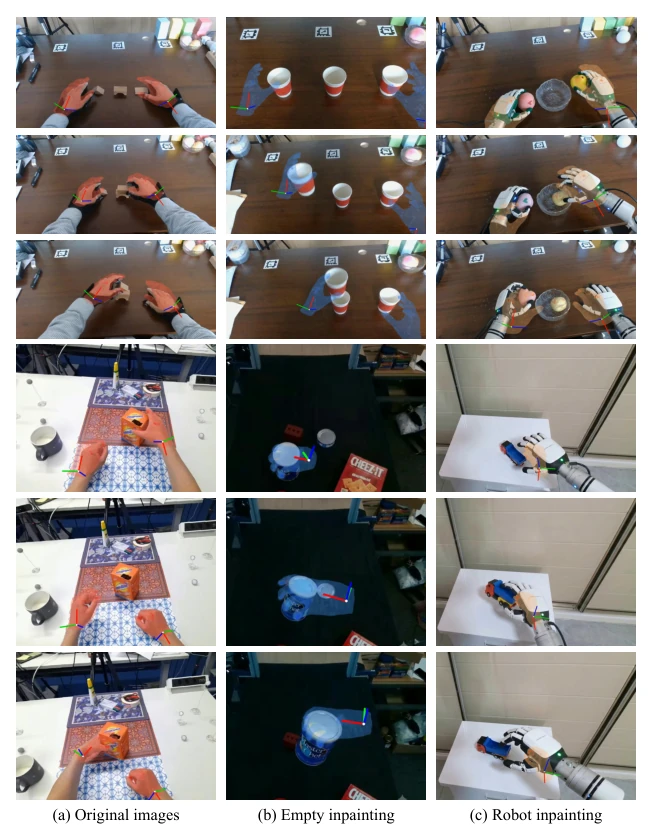
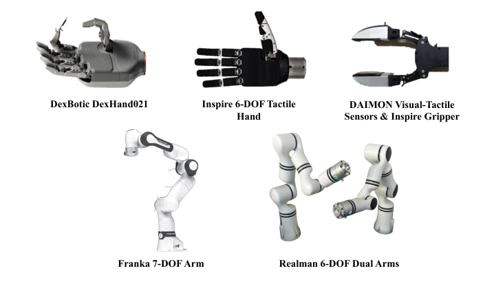
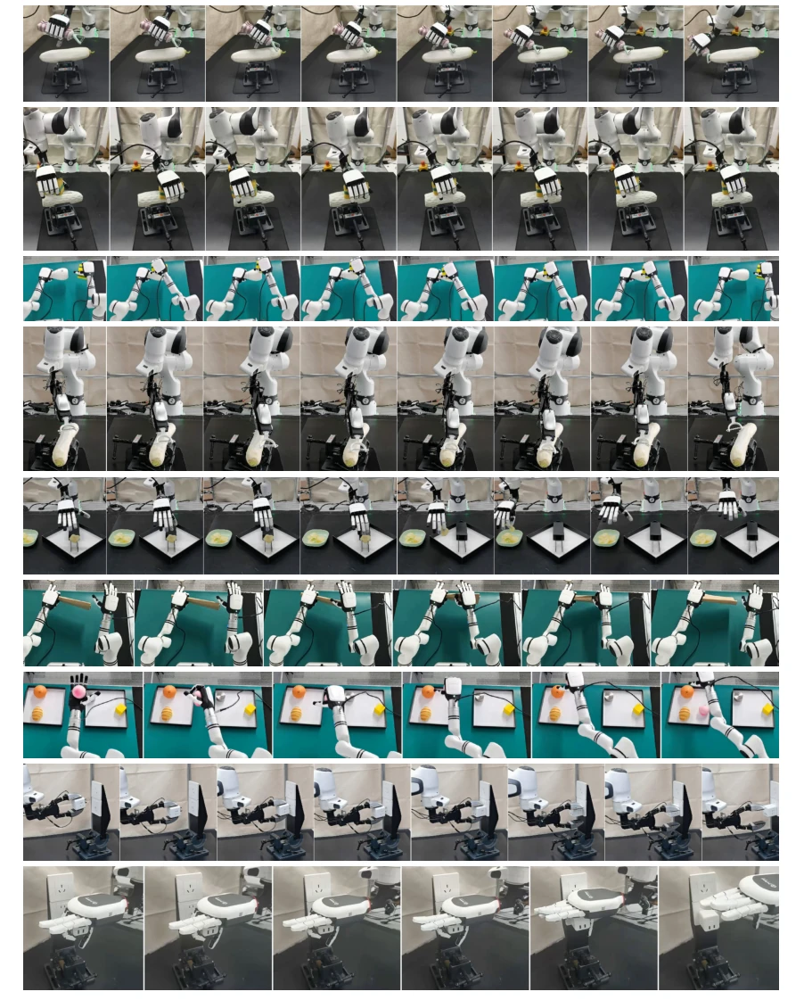
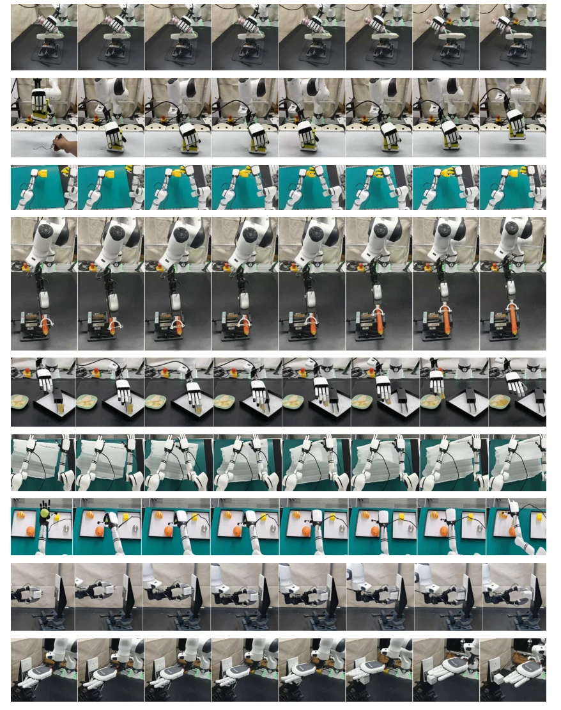

This paper attempts to address the challenge of scarce robot tactile data using 'human data' and proposes the TTP framework. The highlight lies in constructing the H-Tac large-scale tactile dataset and explicitly integrating the tactile modality into the VLA architecture, achieving human-robot tactile alignment through a unified space. However, although the 160-hour data volume is large in the tactile field, it still appears modest compared to pure visual data, and whether the unified space can completely eliminate distribution shifts caused by human-robot morphological differences remains unknown. Experiments performed excellently on real robots, especially significantly outperforming baselines in fine manipulation tasks, but success rates for some contact tasks (such as PlugIn) still have room for improvement. Overall, this is a solid 'overtaking on a bend', proving the value of tactile pretraining, but do not expect it to solve all hardware difference problems with a single click, after all, the discreteness of tactile hardware is undeniable.
Tactile perception is crucial for fine, contact-rich manipulation tasks, but existing robot tactile datasets are small in scale and have high collection costs [63]. Existing Vision-Language-Action (VLA) models mainly rely on vision, lacking tactile modality, leading to performance limitations in contact-intensive scenarios [32, 44]. Although some have attempted to learn skills from human demonstrations [67], most ignore the tactile modality and lack a unified human-robot tactile representation. In addition, directly fine-tuning VLA models often faces the problem of mismatch between pretraining and post-training distributions [3, 11]. Therefore, there is an urgent need for a pretraining system based on large-scale human tactile data to establish transferable tactile priors, achieve skill transfer from human to robot, and fill the tactile void under vision dominance.

Figure 1: Overview of the Transferable Tactile Pre-Training (TTP) system.
The TTP system includes three stages: data collection, pretraining, and post-training. First, construct the H-Tac dataset, integrating HOI-Tac, DeskTask-Tac, and InternData-Tac, totaling 160 hours of data. The model is extended based on BeingH-0.5 [44], introducing a Tactile Expert to predict future tactile signals, running in parallel with the Action Expert. The core innovation lies in unifying the action space (200D) and tactile space (351 taxels on MANO) [67], ensuring human-robot tactile morphology consistency. Training adopts Flow Matching, jointly optimizing action and tactile prediction losses. In addition, a Tactile-Action Manifold Preserving Gating (MPG) is proposed, regulating context enhancement by calculating distribution differences between features and anchors, improving model robustness under contextual shift [44]. This dual-expert architecture enables the model to understand semantics and physical interaction simultaneously, bridging high-level task understanding and low-level contact control, ensuring pretraining knowledge is preserved during transfer.

Figure 2: Our H-Tac datasets, composed of (a) HOI-Tac, (b) DeskTask-Tac, and (c) InternData-Tac. In total, H-Tac contains 160-hour vison-tactile-action data, including 300+ tasks and 135k+ episodes.

Figure 5: Training architecture of TTP. Our model includes an understanding expert for visual and text interpretation, an action expert, and a tactile expert. We use a unified action and tactile space to preserve pre-traing period knowledge.
Experiments cover simulation and real robots. Simulation benchmarks include LIBERO and RoboCasa, where TTP outperforms π0 [4] and BeingH-0.5 [44] on multiple metrics. Real robot testing involves 9 categories of tasks, including peeling, origami, PlugIn, etc., using Franka, Realman, etc., manipulators and Inspire, DexBotic, etc., dexterous hands. Results show that TTP significantly outperforms baselines in fine manipulation (96.7%) and contact-rich tasks (79.2%), especially performing robustly in OOD generalization (such as different objects, lighting). Ablation studies show that the MPG module and tactile prediction are crucial for performance improvement, and increasing data volume can reduce motion prediction error. This proves the effectiveness of human tactile pretraining in real scenarios.

Figure 8: Real robot showcases. Our TTP demonstrate strong capabilities of precise and fine-grained manipulation, outperforming various baselines.
其他图片Other Figures

Figure 3: Data collection system of our DeskTask-Tac dataset.

Figure 4: Statistics on our pre-training datasets.

Figure 6: Visualization showcase. After tactile-based pre-training, our TTP model can generate hand motion and tactile predictions well, and can generalize to OOD inpainted scenes.

Figure 7: Hardware settings in our real-robot experiments.

Figure 9: Demonstration showcases in our real-robot experiments (in distribution). From top to bottom are our 9 tasks: Peeling (Inspire), VaseWiping (single hand), VaseWiping (bimanual), Peeling (Gripper), PickPlaceChips, PaperFolding, SoftHard, PlugIn (Gripper), and PlugIn (DexBotic).

Figure 10: Demonstration showcases in our real-robot experiments (out of distribution). For Peeling tasks, we demonstrate object generalization including carrots and cucumbers. For VaseWiping tasks, we demonstrate object generalization including unseen vases and even wiping a whiteboard. For PickPlaceChips, we demonstrate location and object generalization with crispy instant noodles. For PaperFolding, we demonstrate object generalization with various unseen paper-like objects (A4, cardboards, and a piece of soft cloth). For SoftHard, we demonstrate object generalization including unseen soft and hard objects. For PlugIn tasks, we demonstrate visual interruption by painting the socket into black.